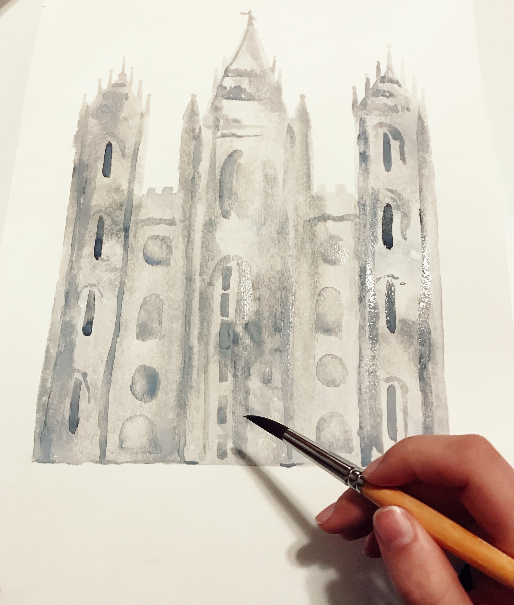

TUTORIALS

Below are a few tutorials demonstrating my own personal creative process and some tips and tricks for watercoloring.
Salt Lake Temple Tutorial
This picture is when I had just finished adding in the detail layer to this temple painting. Before this step, I didn't like how my painting was turning out at all, but after this step I really could feel it starting to form into something beautiful! When you aren't sure how your art piece is going and are imagining something different in your mind, keep going and trying! Eventually you will find your rythm and be happy with what your produce.
This is a timelapse video showing how I painted the flowers onto the base of this temple painting. Before starting I was able to first, practice my flowers on a seperate piece of paper in order to get warmed up. I also figured out all of my colors prior to this video. Since them temple has very cool tones, I decided to implement some contrast by making the flowers consist of super warm tones. By doing this, it really draws the eye to the flowers and the dark details of the temple.